RECORD 000 — THE MAIN SQUAD
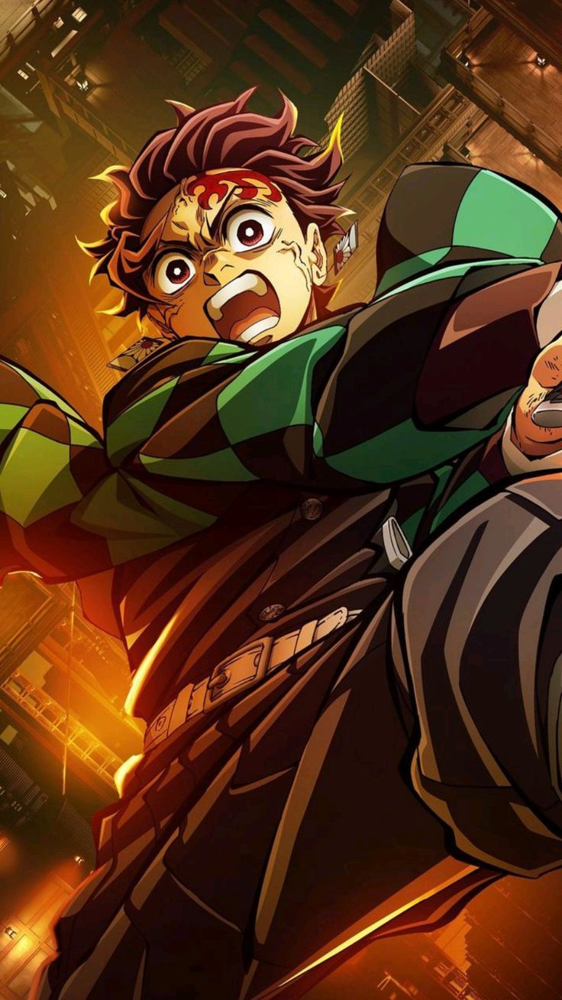
TANJIRO KAMADO — SUN BREATHING USERPersonality: Empathetic, determined, and deeply compassionate, even toward dying demons.
Human Backstory & Slayer Origin: Tanjiro was the eldest son of a charcoal seller. After Muzan slaughtered his family and turned Nezuko into a demon, Tanjiro joined the Demon Slayer Corps to find a cure for his sister.
Fun Fact: Tanjiro inherited his stubborn head and hard skull from his mother, Kie Kamado!
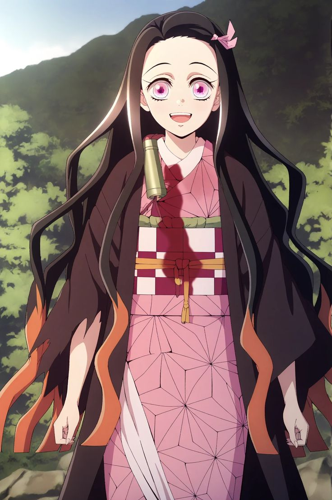
NEZUKO KAMADO — CONQUEROR OF THE SUNPersonality: Caring, fierce, and protective of humans despite her demon urges.
Origin & Transformation: Transformed into a demon by Muzan. Through willpower and hypnotic suggestion from Sakonji Urokodaki, she views all humans as family to protect.
Fun Fact: Nezuko loves sleep over consuming human blood to restore her stamina.
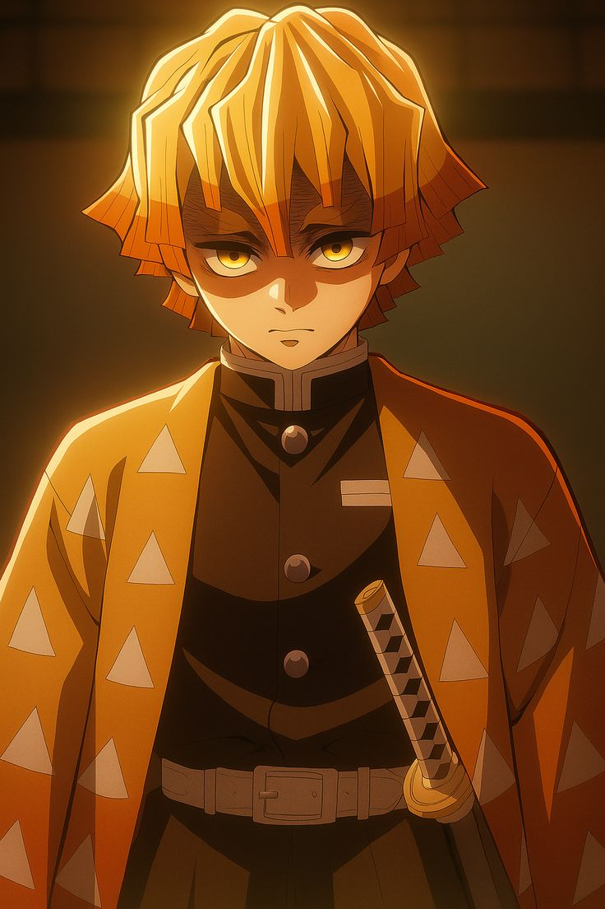
ZENITSU AGATSUMA — THUNDER BREATHINGPersonality: Anxious and fearful, but lightning-fast and lethal when unconscious.
Slayer Origin: Saved from debt by Jigoro Kuwajima. Though he could only learn the First Form, he perfected it into a god-like technique.
Fun Fact: His hair turned yellow after he was struck by lightning while hiding in a tree during training.
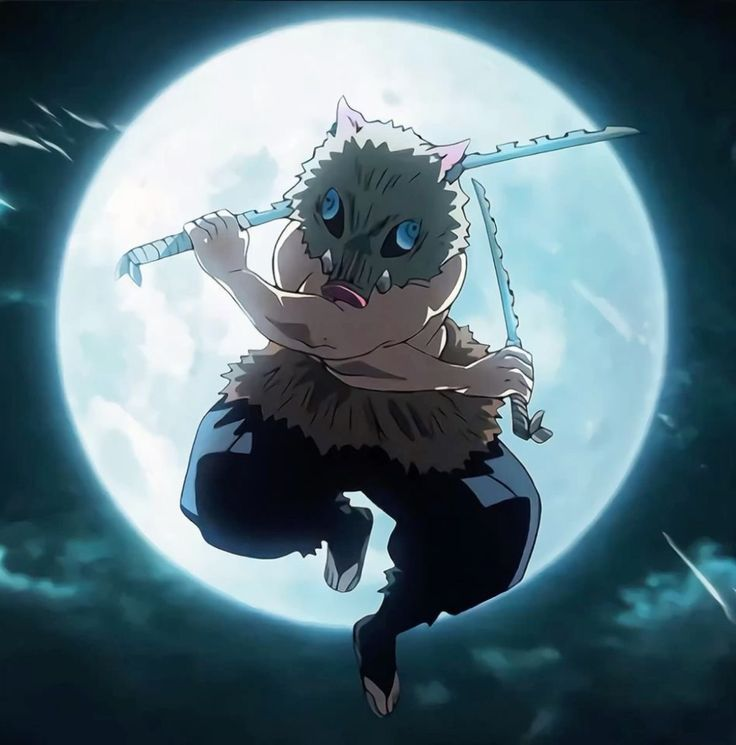
INOSUKE HASHIBIRA — BEAST BREATHINGPersonality: Wild, competitive, proud, and aggressive.
Slayer Origin: Raised by wild boars in the mountains after his mother saved him from Doma. He created his own Beast Breathing style and stole a slayer's swords.
Fun Fact: Underneath his boar mask, he has an extremely beautiful, feminine face.
RECORD 001 — THE NINE HASHIRA
 GIYU TOMIOKA — WATER HASHIRA
GIYU TOMIOKA — WATER HASHIRA
Personality: Stoic, quiet, composed, and burdened by survivor's guilt.
Why He Became a Slayer: Lost his sister Tsutako and his best friend Sabito to demons. Joined the Corps to fulfill Sabito's memory.
Fun Fact: His favorite food is simmered salmon with radish, which makes him smile.
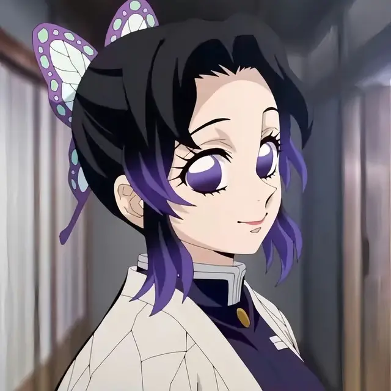
SHINOBU KOCHO — INSECT HASHIRAPersonality: Calm and smiling on the outside, hiding deep hatred for demons.
Why She Became a Slayer: Her parents were killed by a demon, and her elder sister Kanae was slain by Upper Rank Two Doma.
Fun Fact: Lacking physical strength to cut off demon heads, she invented poisons made from Wisteria flowers.
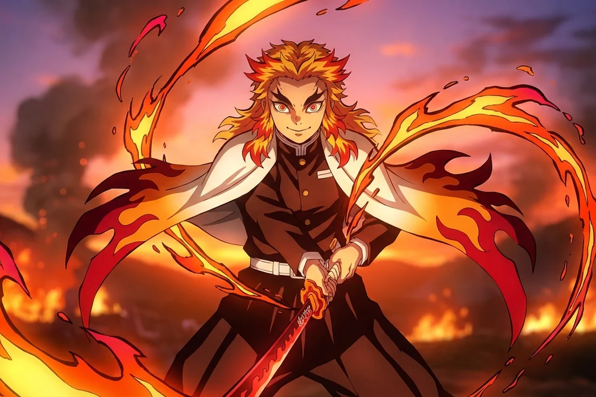
KYOJURO RENGOKU — FLAME HASHIRAPersonality: Enthusiastic, honorable, fiercely brave, and protective.
Why He Became a Slayer: Born into the Flame Hashira line, inspired by his mother's advice to use his strength to protect the weak.
Fun Fact: He shouts "Delicious!" (Umai!) every time he eats bento boxes.
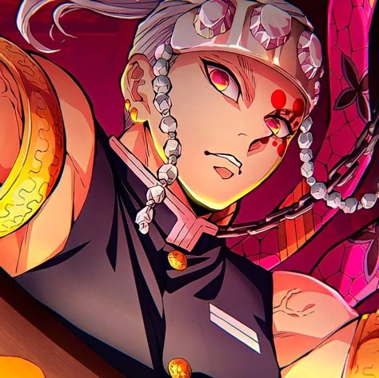
TENGEN UZUI — SOUND HASHIRAPersonality: Flashy, eccentric, confident, and strategic.
Why He Became a Slayer: Fled his cruel ninja clan to forge a new path where he values human lives above ninja missions.
Fun Fact: He has three ninja wives (Makio, Suma, and Hinatsuru).
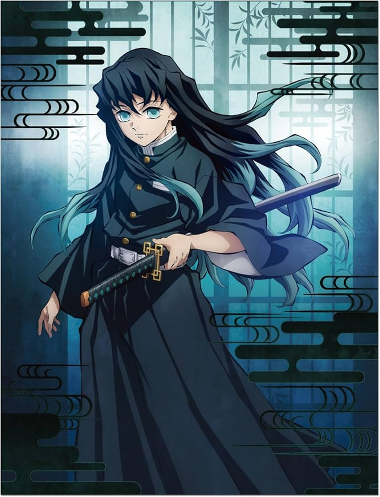
MUICHIRO TOKITO — MIST HASHIRAPersonality: Absent-minded and quiet, but a prodigy swordmaster.
Why He Became a Slayer: Lost his twin brother Yuichiro to a demon attack, causing severe memory loss until his memories resurfaced.
Fun Fact: Became a Hashira just two months after holding a sword for the first time.
 MITSURI KANROJI — LOVE HASHIRA
MITSURI KANROJI — LOVE HASHIRA
Personality: Warm-hearted, cheerful, passionate, and immensely strong.
Why She Became a Slayer: Joined to find a husband who would accept her unique strength and unusual hair color.
Fun Fact: She eats eight times as much as a normal person due to her dense muscle structure.
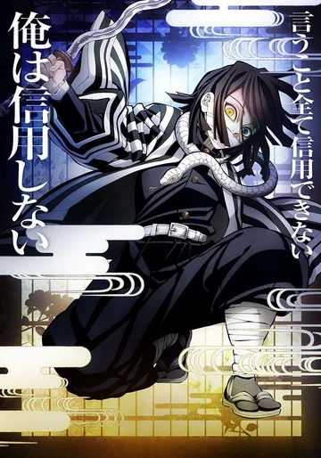
OBANAI IGURO — SERPENT HASHIRAPersonality: Strict, harsh, and disciplined, but secretly devoted to Mitsuri.
Why He Became a Slayer: Escaped a corrupt cult family that sacrificed children to a Serpent Demon.
Fun Fact: His white snake, Kaburamaru, helps him fight due to Obanai's partial blindness.
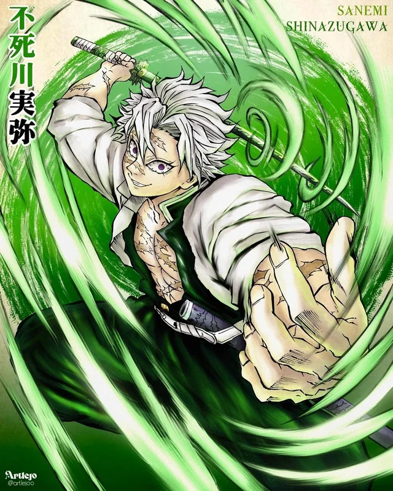
SANEMI SHINAZUGAWA — WIND HASHIRAPersonality: Wild, abrasive, and aggressive, but deeply caring for his brother Genya.
Why He Became a Slayer: Was forced to kill his own mother after she turned into a demon and attacked his family.
Fun Fact: Possesses rare "Marechi" blood that intoxicates demons when they smell it.
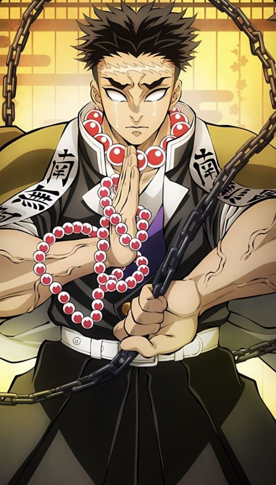
GYOMEI HIMEJIMA — STONE HASHIRAPersonality: Gentle, spiritual, humble, and easily moved to tears.
Why He Became a Slayer: Falsely accused of murder after defending orphans from a demon; recruited by Master Ubuyashiki.
Fun Fact: He is the physically strongest and tallest Hashira in the Corps.
RECORD 002 — MUZAN & THE UPPER MOONS
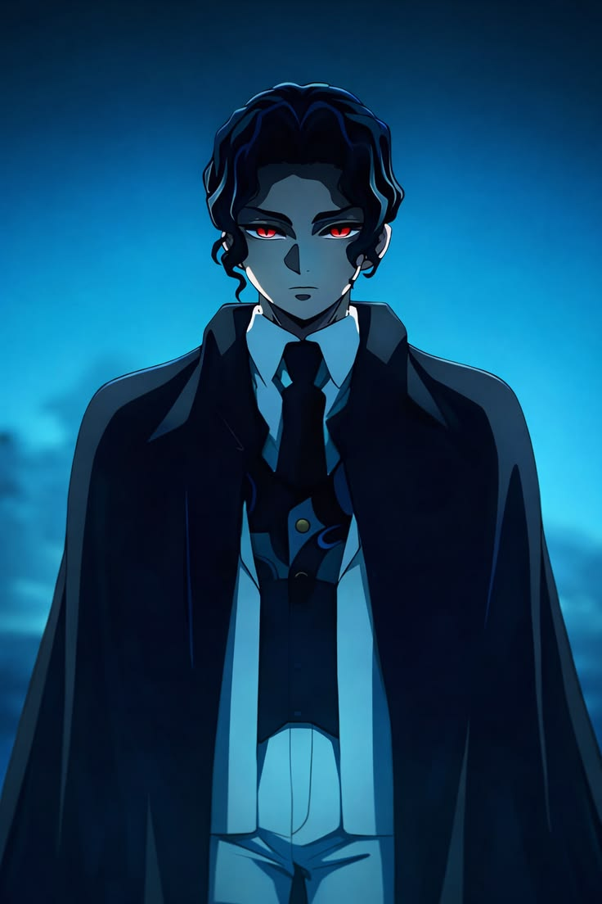
MUZAN KIBUTSUJI — THE DEMON KINGPersonality: Ruthless, narcissistic, paranoid, and obsessed with eternal life.
Human Backstory: Born in the Heian period, Muzan was diagnosed with a fatal illness. A doctor treated him with an experimental Blue Spider Lily medicine. Believing it failed, Muzan killed the doctor, only to realize he had gained immortality at the cost of being burned by the sun and craving human flesh.
Fun Fact: Muzan can change his appearance into a woman or a child to hide in human society.
 KOKUSHIBO — UPPER RANK ONE
KOKUSHIBO — UPPER RANK ONE
Personality: Calm, honorable, disciplined, and obsessed with martial mastery.
Human Backstory: Formerly Michikatsu Tsugikuni, twin brother of Yoriichi. Driven by jealousy over his brother's unmatched power and fear of dying young from the Slayer Mark, he accepted Muzan's offer to become a demon.
Fun Fact: He uses Moon Breathing, a style derived directly from Sun Breathing.
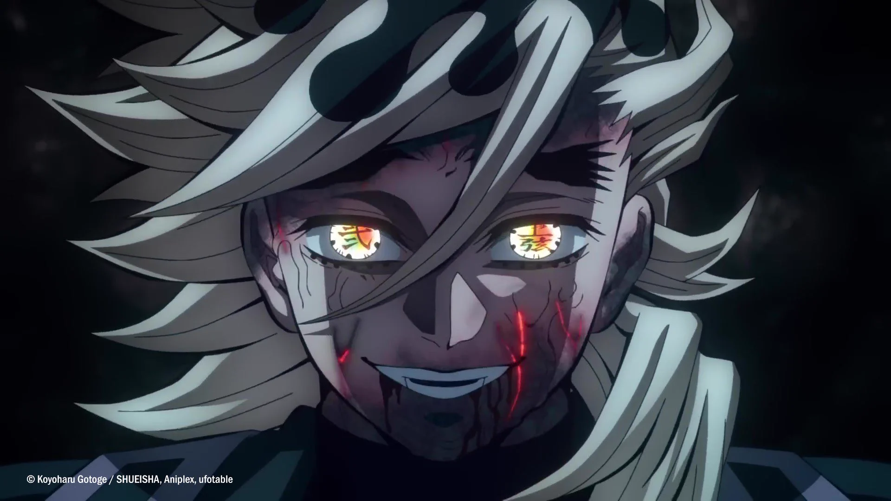
DOMA — UPPER RANK TWOPersonality: Outwardly friendly and cheerful, but completely lacking human emotions.
Human Backstory: Raised as a cult leader due to his rainbow-colored eyes. He felt no emotion as a human and accepted demonhood from Muzan out of curiosity.
Fun Fact: He eats primarily women, believing he is saving them from suffering by absorbing them.
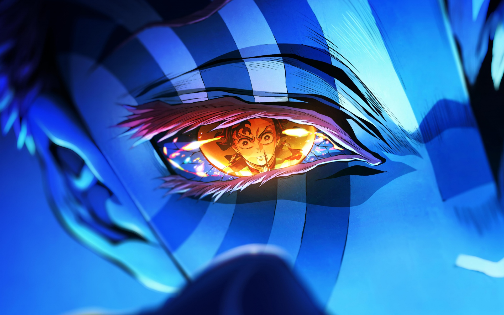
AKAZA — UPPER RANK THREEPersonality: Fierce warrior who respects strong opponents and refuses to eat women.
Human Backstory: Formerly Hakuji, a human who stole money to buy medicine for his sick father. After his father's suicide and the murder of his fiancé Koyuki, Hakuji slaughtered a rival dojo in grief before Muzan turned him into a demon.
Fun Fact: His snowflake martial arts stance is based on Koyuki's favorite hair ornament.
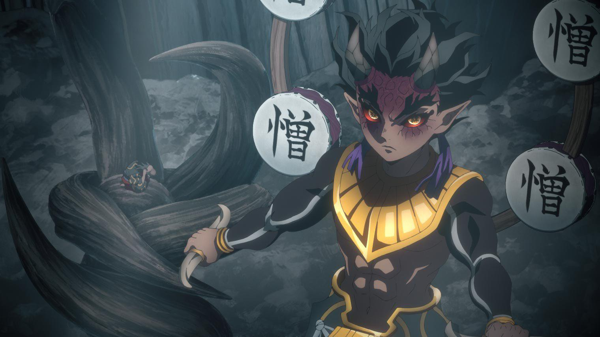
HANTENGU — UPPER RANK FOURPersonality: Cowardly, paranoid, and constantly playing the victim.
Human Backstory: A chronic thief and murderer who always blamed others for his crimes. Turned into a demon by Muzan while awaiting execution.
Fun Fact: His Blood Demon Art splits his emotions (Anger, Sorrow, Joy, Pleasure) into separate powerful clones.
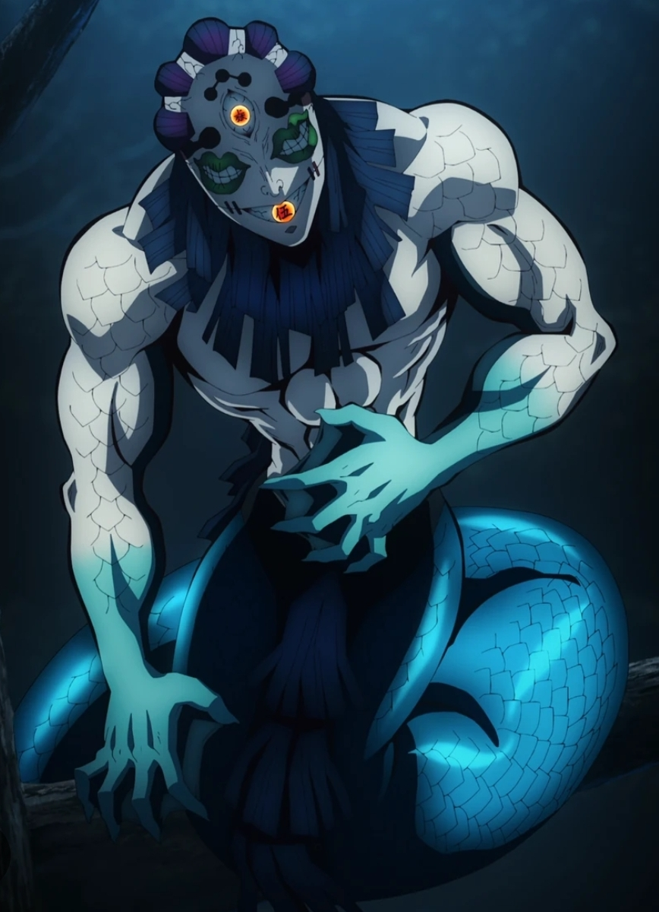
GYOKKO — UPPER RANK FIVEPersonality: Arrogant, sadistic, and obsessed with grotesque "art."
Human Backstory: Lived in a fishing village and was obsessed with animal carcasses. After being stabbed by angry villagers, Muzan found him dying and turned him into a demon.
Fun Fact: He lives inside decorative porcelain pots and can teleport between them.
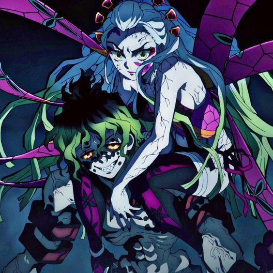
DAKI & GYUTARO — UPPER RANK SIXPersonality: Daki is vain and prideful; Gyutaro is bitter, envious, and protective of Daki.
Human Backstory: Born in extreme poverty in Yoshiwara. After Daki was burned alive by a samurai, Gyutaro killed the attacker and accepted demonhood from Doma to save his dying sister.
Fun Fact: Both must be decapitated simultaneously for Upper Rank Six to be defeated.
TWO SIDES. ONE ENDLESS CONFLICT.